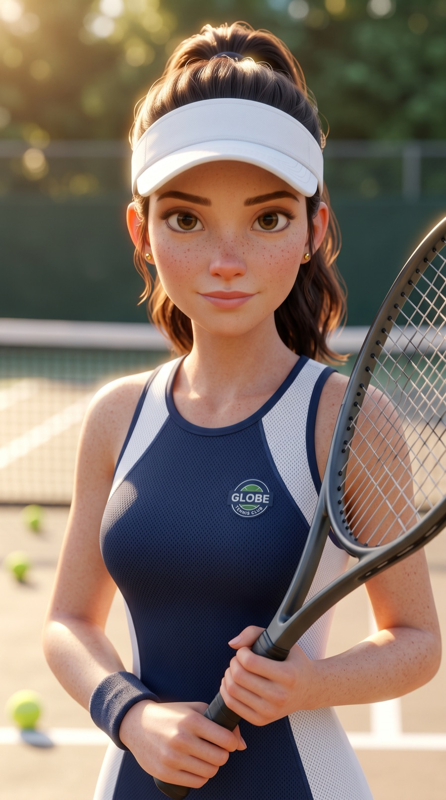
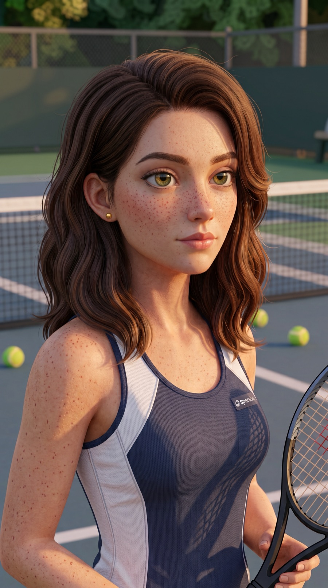
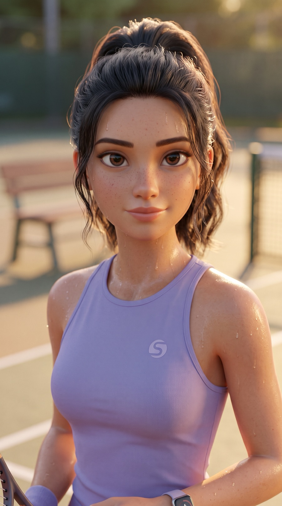
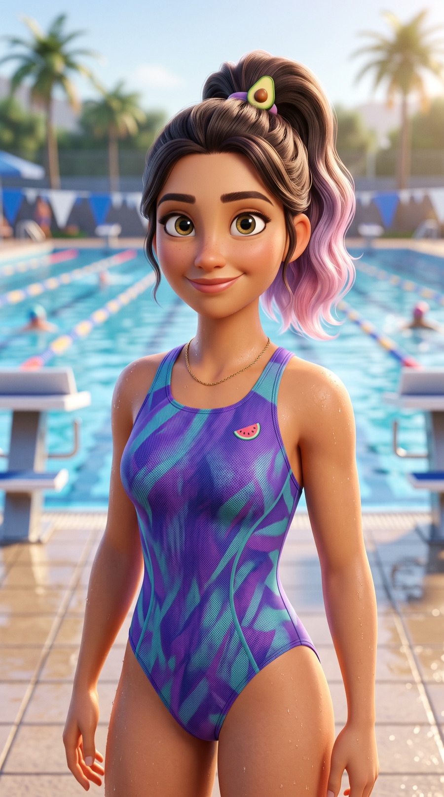

Menstrual Cycle & Nutrition App




Building a character that people would trust with something as personal as their health taught me that AI content still lives or dies on the same instincts as any brand work — consistency, empathy, and knowing exactly who you're speaking to.— Josefina Soler Rossi